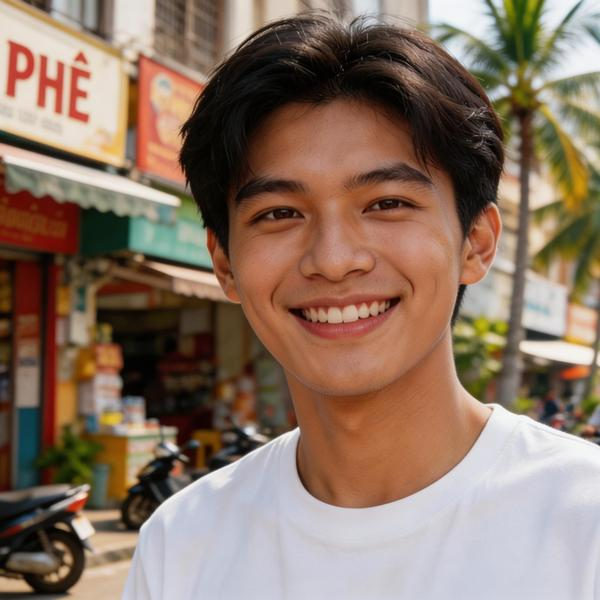

2026 年 10 月的新消息
自九月中旬以來，heribert-berlin.de 上的新動態
2026 年 10 月 15 日
親愛的讀者們：
十月有瓦爾德馬的新消息，遊戲室也有新內容。下面我要介紹一個人，他在小說裡擁有 Kim 的心。
貓頭鷹瓦爾德馬：第 08 冊來了
10 月 1 日，《大山雀、牠的家庭與落葉松》出版了。Nils 黃色的胸前繫著一條黑領帶，靈巧的妻子 Ida 守著蛋保暖，隨著 Mia、Max 和 Moritz 三隻雛鳥出生，一天上百次的餵食就開始了。孩子們會順便學到：山雀不會睡過整個冬天，而是每天都在找食物；落葉松是針葉樹，秋天卻照樣掉光針葉。一如往常，我的兒童頻道上有對應的影片。第 08 冊的電子書即將推出。
接下來的安排
第 09 冊《烏鶇、牠的家庭與櫻桃樹》將於 11 月 1 日出版，第 10 冊《狼、牠的家庭與梣樹》將於 12 月 1 日出版。還有一件事：直到第 02-01 冊，也就是第二季的開篇，所有童書都已經完整準備好了。這足以撐起整個系列直到 2027 年底。
第 01 冊修訂版
第一冊《貓頭鷹瓦爾德馬與森林裡的動物》出了修訂版，換了新封面和新配色，ISBN 沒有變。現在它也有電子書了。
從首頁直接前往 YouTube
首頁現在有按鈕，可以直接通往我的 YouTube 頻道：兒童頻道、有聲書播放清單、主頻道和 TransportFever 頻道。點一下就到，不必再繞道各個子頁面。
遊戲室新增：兩款記憶遊戲都有國旗
兩款記憶遊戲都多了第二組圖案：116 面國旗。在遊戲上方選擇要用圖片還是用國旗來玩。每找到一對，您就會聽到這個國家的名字，德文、英文或中文都有。兩款遊戲的朗讀說明也都重新錄製了。一切都在遊戲室裡。
一如往常：請幫忙轉告
如果您喜歡這份通訊，歡迎轉寄出去。任何人都可以在訂閱頁面報名。若您有話想對我說，直接回覆這封信就好，每一封回信我都會讀。
謝謝您一路相伴。我們下次再會！
您的
Heribert Lange
現在，讓我們前往越南……
容我介紹 Kim 的頭獎：
Nong Phạm
給讀者的一封信

親愛的讀者們：
事務所上上下下，您現在都認識了。今天要談的這個人，不在任何事務所工作，卻是小說裡最重要的人物之一：Nong Phạm，21 歲，來自越南的美奈（Mũi Né）。
Nong 是導遊。他帶遊客認識自己的國家，而且有一項導遊少見的特質：他什麼都記得。Kim 告訴他自己在倫敦姊姊家又多待了一個星期，Nong 問：「Sunny，對嗎？」這個名字他記住了。身為偵探的 Kim 卻不得不承認，自己什麼也沒記住：「真是太丟臉了。」
兩個人怎麼走到一起，小說用了一種我特別喜歡的方式來寫。Kim 度假回來，在柏林整理照片，發現其中相當大一部分都是為 Nong 而拍的。他其實只和 Nong 吃過兩次晚餐，從來不是單獨兩個人，總是在親戚和鄰居的目光下。這位當偵探時能讀懂每一個訊號的人，竟然在度假照片裡發現了自己的感情。
接著他算了算時間：柏林下午 2 點 22 分，越南晚上 7 點 22 分，剛剛好。他存了 Nong 的 Zalo，那是越南版的 WhatsApp。可他還是猶豫了。不開口問，就永遠是一個沒說出口的「不」，他這樣想，而不問，他就已經輸了。背景裡正放著阿巴合唱團（ABBA）的《The Winner Takes It All》，決定就這麼下了。他撥出視訊電話，因為他想立刻看到 Nong 的反應。
電話被按掉了。Kim 強忍著眼淚。然後手機震動，Nong 回撥過來。他剛才只是得趕緊衝出屋子，跑進棚子裡，「你懂的吧？」Kim 全都懂了。Nong 知道他們兩人之間的事，並在他們和世界其他人之間保持了必要的謹慎。
「我滿懷思念地等你。」他說。然後他用手指比了一個愛心，送上一個飛吻，趕在 Kim 回答之前掛了電話。
後來 Kim 把沒電的手機接上充電線，Nong 的訊息已經在等他：「Ngủ ngon nhé, em yêu.」意思是「做個好夢，我的寶貝」。另外還有 Olga 打來的 17 通未接來電，不過那是另一個故事了。
後來兩個人把手機鈴聲都設成同一首歌。對彼此來說，對方都是頭獎。
在第二集裡，Nong 住在柏林，學習德語，這您在上一期通訊已經知道了。Kim 和 Nong 的故事在第一本書裡怎麼結束，書裡和電子書裡都有答案。
您的 Heribert Lange
具體改動內容 ›
獻給想了解每個細節的您，自上一期通訊以來的技術更動清單。
1. 童書
- 第 08 冊《大山雀、牠的家庭與落葉松》於 10 月 1 日出版，訂購連結與影片同步上線
- 新增第 08 冊的電子書預告
- 季別總覽：新增第 09 冊（11 月 1 日）與第 10 冊（12 月 1 日）的預告，第 08 冊封面去掉條碼
- 第 01 冊：修訂版新封面上線，新增電子書與訂購連結
- 首頁：標記改為「第 01-08 冊已出版」
2. 首頁
- 童書、小說與 YouTube 三個方塊各自新增直達 YouTube 頻道的按鈕
3. 更容易被找到與技術調整
- 53 個頁面補上 canonical 標籤，讓搜尋引擎每一頁只收錄一次
- 所有回首頁的連結都指向 index.html，因此在本機開啟時也能正常運作
- 亞洲旅行報告頁面：中文文字改為繁體字
4. 讀者檔案庫，就是這些頁面
- 兩款記憶遊戲：第二組圖案，116 面國旗，在遊戲上方選擇，國家名稱以所選語言朗讀
- 兩款記憶遊戲的說明重新錄製
- 遊戲室：兩款記憶遊戲的方塊現在也顯示國旗
- 新增通訊第 05 期，並上傳了 Nong 的肖像